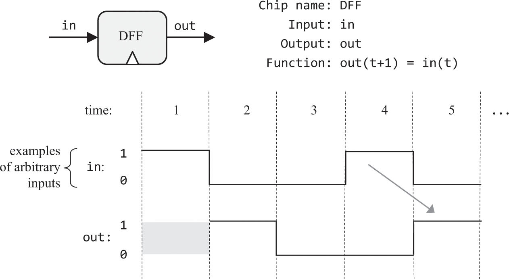
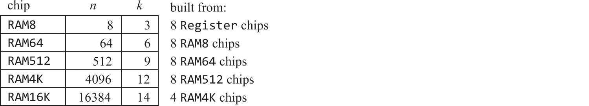

2.2 Memory
- Through memory, we can store the results of the operations we completed using logic
- This is done using memory chips, as opposed to logic chips
- Are sequential - meaning they rely on outputs that have been processed prior
- To do this, we must first model the progression of time using a clock and binary signals defined as tick and tock
- The time between a tick and the end of a tock is called a cycle, and these cycles are used to regulate the operations of the memory chips
Memory Devices
- Maintain state of variables
- To maintain state and respond to changes, we use a clock and an elementary, time dependant logic gate that can alternate between states that represent 1 and 0 (called a DFF for data flip flop)
- These DFFs can be used to create 1 bit registers (which can store 1 bit of information) and how n registers can be combined to create an n bit register
- These registers are then combined to make RAM!
Flip Flops
- Memory chips store information over time
- DFFs take in a single bit of data and output a single bit of data as well as mirror a clock input
- Together, the data and clock inputs enable the DFF to output the input value at the end of each cycle
- We can see that the output cycle mirrors the previous input cycle (its shifted one to the right)

Ok, But How Do We Store Memory?
- First need to understand the levels of abstraction:
- Data Flip Flops (DFFs)
- Registers (Based on DFFs)
- RAM (Based on registers)
- Counters (Based on registers)
Data Flip Flops
- Has a single bit data input, single bit data output, a clock input and time dependant behaviour , i.e. out(t) = in(t-1)
- This behaviour is just saying the output mirrors the input exactly one cycle after it occurs
- If we put a one bit value in the DFFs input, the DFF's state will be set to this value and the DFF's output will emit it in the cycle
Registers
- We need a single bit register named Bit and a 16 bit register named Register
- The single bit register stores a single bit of information over time
- It has two inputs - one to allow for write changes, and another that carries data to be input
- 1 Output that emits the current state
- Compared to a data flip flop, this allows some information to be 'saved' and not overwritten every cycle. It will store this value until we enable the write input and put some different input into it
- The 16 bit register works exactly the same but can store 16 bit values
Random Access Memory
- Combines n Registers
- By specifying an address (a number from 0 to n-1), each register can be selected and made available for instantaneous read / write operations
- Read contents by setting the address input to m
- Write value V to a register M and set the load bit to 1 ( will only output V on the next cycle onwards )
Counter
- Increments its own value by 1 every cycle
- Four inputs:
- inc == true, allows the counter to increment
- reset == true, resets the current value to 0
- in - value of V
- load == true, set the value to in

How Do We Implement This With Logic Gates?
DFFs
- Abstracted away since it's quite complicated to implement via only NAND
Registers
- Route the output of a DFF into a mux gate along with another input (the thing you want to store)
- The load bit can be used as the selector on the mux gate (if we set the load bit to 1, it will funnel the input into the DFF and store it, if we set it to 0, it will store the DFFs previous output)
- if load, set the register to a new value, else set it to the previously stored value
- To form an n-bit register, we form an array of n Bit chips

RAM
- Combine a multitude of n-bit registers

A register - sel comes from "or" of first destination bit "d1" and "not" of leftmost bit